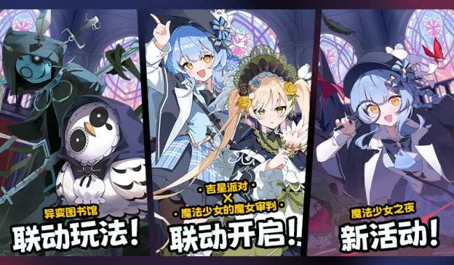

「星引擎 Party」游戏内公告
09月03日版本更新 发布ID：210 “欢迎来到吉星派对！” 亲爱的玩家们，游戏将于2026年09月03日10:00(UTC+8)进行一次更新，完成更新后，请重新登录游戏。 ▇ 更新时间 2026年09月03日10:00(…
词条资料
公告

- 09月03日版本更新
- 魔法少女的魔女审判
- 通行证“小红帽-邦妮”
- 中秋揽月活动
- 魔法少女之夜活动
- 假日福利
- 关于赛季皮肤复刻方案调整说明
- 关于打击非法脚本行为的处理公告
- 关于打击第三方违规代充及账号处罚的声明
- 未成年人成长护航指引
- 公平运营声明
09月03日版本更新 发布ID：210 “欢迎来到吉星派对！” 亲爱的玩家们，游戏将于2026年09月03日10:00(UTC+8)进行一次更新，完成更新后，请重新登录游戏。 ▇ 更新时间 2026年09月03日10:00(UTC+8)，预计维护4小时。 ▇ 更新内容 1. 《吉星派对》 X 《魔法少女的魔女审判》联动开启 ！ 《吉星派对》 X 《魔法少女的魔女审判》 联动活动将于2026年09月03日开启！ 【橘雪莉】&【远野汉娜】两位角色将作为联动限定角色登陆《吉星派对》！ 联动期间，开启限时联动活动，玩家可免费获得头像-像素远野汉娜 、头像-像素橘雪莉等联动限定奖励。 联动期间，限时网页活动开启，你的选择将通向谁的命运？参与网页活动，可以领取限定名片名片-魔法少女的魔女审判联动一期（静态）！ 前往活动 2. 联动限时玩法 --- “异变图书馆” --- 2026/09/03 ~ 2026/10/14 “被异变转化的图书馆会上演什么样的表演？” •新地图：异变图书馆 •新怪物：典狱长、看守、罪恶茶壶、大盗 •新筹码：放大镜、汉娜人偶 3. 上线通行证 --- “小红帽-邦妮” --- 2026/09/03 ~ 2026/10/14 玩家可从主界面进入查看，购买并完成通行证任务可获得新皮肤“小红帽-邦妮”以及其他丰厚的奖励。 4. 上线活动 --- 魔法少女之夜 --- 2026/09/03 ~ 2026/10/14 每日登陆即可领取奖励，总计可获得星盘 × 160、抽奖券 × 2、鼠鼠筹码 × 200、中级战斗宝典 × 5等。 5. 上线活动 --- 中秋揽月 --- 2026/09/25 ~ 2026/10/14 每日登陆即可领取奖励，总计可获得星盘 × 160、抽奖券 × 2、鼠鼠筹码 × 200、中级战斗宝典 × 5等。 6. 上线活动 --- 假日福利 --- 2026/09/25 ~ 2026/10/14 完成活动任务，可获得头像-像素罪恶茶壶 × 1、头像-像素大盗 × 1、星盘 × 530、抽奖券 × 7、时装券 × 12、鼠鼠筹码 × 600、中级战斗宝典 × 16等。 7. 上线活动 --- 毒苹果UP！ --- 2026/09/03 ~ 2026/10/14 玩家可从“抽奖”对应页签查看，在“毒苹果UP”页签进行抽奖，会有更高概率获得角色。 8. 上线活动 --- 网络魅影UP！ --- 2026/09/03 ~ 2026/10/14 玩家可从“抽奖”对应页签查看，在“网络魅影UP”页签进行抽奖，会有更高概率获得角色。 9. 潜能激发 •新潜能激发的角色：网络魅影。 •网络魅影的PVE被动技能效果文本调整为： ￮回合开始时，如果2格内没有怪物，则获得1张战斗牌，并获得【防火墙】，持续1轮。自身挑战发起的战斗结束后，随机丢弃手牌中的1张战斗牌。 •【防火墙】效果：攻击+2，防御+2。 •网络魅影潜能激发效果： ￮使用主动技能时，如果目标距离南希露超过6格，获得1张战斗牌，并获得【防火墙】，持续1轮。 ￮自身挑战发起的战斗结束后，如果自身的手牌数不超过5，则不再丢弃战斗牌。 ￮拥有【防火墙】时，对于2格外的怪物，视为受到伤害-1。 • 预告仅供参考，具体内容均以上线时为准。 10. 商城更新 •上架了【战斗礼包】 --- 礼包上架时间 --- 2026/09/03 ~ 2026/10/14 •上架了【魔力晶核礼包】 --- 礼包上架时间 --- 2026/09/03 ~ 2026/10/14 •上架了超值表情礼包：暗影忍者表情礼包、风水师表情礼包 --- 2026/09/03 ~ 2026/10/14 11. 往期皮肤复刻抽奖 •复刻通行证皮肤：“热浪沙滩-南希露” --- 2026/09/03 ~ 2026/10/14 玩家可从主界面“抽奖”系统的“复刻抽奖”页签进入，获得皮肤和各种装扮！ 12. 平衡性调整 •新增筹码： 【书签】：效果牌伤害+1。 【磨刀石】：生命值低于50%时，攻击力+4，受到伤害-1。 【循环往复】：获得3次强化筹码重选次数，3回合后选择并获得1个强化筹码。 【能量回收】：每累计5点移动点数，获得2层充能，充能层数大于5时，移动速度+1。 【电流剑】：攻击命中后，获得2层充能，充能层数大于7时，攻击力+2。 【安全气囊】：若受到超过当前生命值的伤害，耗能6：使得本次伤害变为0。受到伤害后获得1充能。 【电击手套】：打出效果牌时，获得2层充能。回合结束时，耗能4：对自身2格范围内的所有怪物造成2点伤害。 【跃迁引擎】：停留在怪物突击门或疾行时，获得2充能，并使得下次移动速度+2。 【电流核心】：使用技能后，本回合出牌数+1；消耗5层充能，主动技能冷却时间-1。 【永动机】：移动速度+2。回合开始时，如果自身的充能层数低于6，则使充能层数变为6。 【电磁炮】：攻击力+2。挑战怪物后，耗能4：对目标所在地块的所有怪物造成当前攻击力50%的伤害。 •修改筹码： 【优雅之羽】： 原效果：闪避成功时，攻击力+1，最多叠加3层。 调整为：闪避成功时，攻击力+1，最多叠加4层。 【会员推荐信】： 原效果：轮次奖励卡牌+1。 调整为：轮次奖励卡牌+1，商店购买卡牌的价格-1。 【标靶】： 原效果：攻击力+1，回合开始时，对4格内随机的1个怪物施加1层标记。 调整为：攻击力+1，回合开始时，对4格内最近的1个怪物施加1层标记。 【夹心饼干-美味】： 原效果：生命值上限+5。回合开始时，如果生命值低于50%，获得1层反击。 调整为：生命值上限+3，每2点额外生命值上限增加1点攻击力。 •删除筹码：【肾上腺素-一般】 •预告仅供参考，具体内容均以上线时为准。 13. 系统调整及优化 •新增对局回放功能，现在可在个人信息界面回放已完成的对局了。 •优化了聊天系统，现在可以发角色表情了。 •优化了对局选择角色阶段超时时的自动选择逻辑，会优先选择玩家已选择但未确定的角色。 •优化了对局中查看各类信息时被强制打断的逻辑，现在不涉及玩家自身操作时不再被打断。 •优化了对局中选择目标的弹窗信息，现在会额外展示待选目标的各项属性及Buff信息。 •优化了个人信息界面、抽奖界面、通行证界面的设计。 •规范了对局中Buff的信息展示格式，并补充了部分缺失的Buff信息说明。 14. Bug修复 •修复了合作挑战模式中，在【魔法学院】里使用角色【魔渊幼体】切换地图时有概率卡死的问题。 •修复了合作挑战模式中，角色【暗区少主】释放主动技能后目标角色未获得【星光】的问题。 •修复了合作挑战模式中，筹码【紫色飞星】、【金色飞星】造成的伤害未计入伤害统计的问题。 •修复了合作挑战模式中，进行反击时筹码【美工刀】效果有概率无法触发的问题。 •修复了合作挑战模式中，电脑bot无法触发筹码【紫色飞星】【金色飞星】的问题。 •修复了合作挑战模式中，偶现角色或怪物在已被击倒后仍可触发战斗的问题。 •修复了合作挑战模式中，有概率重复播放出场动画的问题。 •修复了标准模式中，在【樱花小镇】里使用角色【魔渊幼体】进行特定操作导致卡死的问题。 •修复了标准模式中，在【丛林冒险】里使用角色【魔渊幼体】表现异常的问题。 •修复了在特定操作下，变装派对卡池进行连续抽取时UI表现异常的问题。 •修复了部分机型在合作挑战模式中筹码界面显示异常的问题。 •修正了多处文本错误。 ▇ 版本维护奖励 本次更新维护还将全服以邮件的形式发放---【抽奖券 × 3】。 邮件有效期为7×24小时，请及时在邮件中领取。 祝您游戏愉快，今后也请多多支持《吉星派对》。 《吉星派对》运营团队 魔法少女的魔女审判 发布ID：211 “欢迎来到吉星派对！” 《吉星派对》 X 《魔法少女的魔女审判》 联动活动将于2026年09月03日开启！ 【橘雪莉】&【远野汉娜】两位角色将作为联动限定角色登陆《吉星派对》！ ▇ 联动内容 1.角色技能介绍 •橘雪莉 ￮PVP主动技能【怪力投掷】：将2格内的所有敌对角色扔向5格内的一个地块，随后对该地块的所有敌对角色造成2点伤害。 ￮PVP被动技能【侦探出击】：主动挑战敌方角色后，获得1层【推理时间】，最高叠加4层。 ￮PVE主动技能【怪力投掷】：将3格内的所有怪物扔向7格内的一个地块，随后对该地块的所有怪物造成2点伤害。 ￮PVE被动技能【侦探出击】：主动挑战怪物后，获得1层【推理时间】，最高叠加4层。 ￮PVE联动技能【挚友守护】：如果远野汉娜在橘雪莉4格内，使远野汉娜获得受到伤害-1。 ￮【推理时间】效果：每层使自身攻击力+1。回合结束时减少1层。 •远野汉娜 ￮PVP主动技能【飘浮魔法】：获得【飘浮】，持续1轮。 ￮PVP被动技能【幻想千金】：移动的最终点数大于等于6时，获得1星币。 ￮PVE主动技能【飘浮魔法】：获得【飘浮】，持续1轮。 ￮PVE被动技能【幻想千金】：移动的最终点数大于等于6时，获得1星币。 经过友方角色时，获得1星币和1层【人偶制作】。如果此时拥有【飘浮】且自身星币足够，向该友方角色转账3星币。 当【人偶制作】达到7层时，远野汉娜获得【人偶完成】：经过友方角色时，使该友方角色获得下次移动速度+2。 ￮PVE联动技能【挚友祝福】：经过橘雪莉时，使橘雪莉获得下次移动速度+2和1层【推理时间】。 ￮【飘浮】效果：移动速度+2，不会触发陷阱和路障。被其它单位经过时不会触发战斗。 •预告仅供参考，具体内容均以上线时为准。 2.上线活动 --- 魔法少女的魔女审判活动 --- 2026/09/03 ~ 2026/10/14 •玩家可从主界面进入联动活动，完成活动任务可免费获得： 头像-像素远野汉娜 × 1、 头像-像素橘雪莉 × 1、 卡牌-魔法少女的魔女审判 × 1、 抽奖券 × 10、 时装券 × 10、 鼠鼠筹码 × 500、 中级战斗宝典 × 10、 蓝色材料自选箱 × 10。 3.限时上架--- 联动角色礼包 --- 2026/09/03 ~ 2026/10/14 •玩家可从主界面进入联动活动，购买"限时联动角色礼包"可获得： 角色橘雪莉、 角色远野汉娜、 背景：魔法少女的魔女审判联动一期、 名片-魔法少女的魔女审判联动一期（动态）、 名片-橘雪莉、 名片-远野汉娜、 头像-橘雪莉鼠鼠、 头像-远野汉娜鼠鼠、 星盘 × 1200。 祝您游戏愉快，今后也请多多支持《吉星派对》。 《吉星派对》运营团队 通行证“小红帽-邦妮” 发布ID：212 “欢迎来到吉星派对！” ▇ 活动时间 2026年09月03日 10:00:00（版本更新后） ~ 2026年10月14日 23:59:59(UTC+8) ▇ 活动内容 玩家可从主界面进入查看，购买并完成通行证任务可获得新皮肤“小红帽-邦妮”以及其他丰厚的奖励。 祝您游戏愉快，今后也请多多支持《吉星派对》。 《吉星派对》运营团队 中秋揽月活动 发布ID：213 “欢迎来到吉星派对！” ▇ 活动时间 2026年09月25日 04:00:00 ~ 2026年10月14日 23:59:59(UTC+8) ▇ 活动内容 每日登陆即可领取奖励，总计可获得： 星盘 × 60、 星盘 × 100、 抽奖券 × 2、 星币 × 1000、 蓝色材料自选箱 × 2、 鼠鼠筹码 × 200、 中级战斗宝典 × 5。 祝您游戏愉快，今后也请多多支持《吉星派对》。 《吉星派对》运营团队 魔法少女之夜活动 发布ID：214 “欢迎来到吉星派对！” ▇ 活动时间 2026年09月03日 10:00:00（版本更新后） ~ 2026年10月14日 23:59:59(UTC+8) ▇ 活动内容 每日登陆即可领取奖励，总计可获得： 星盘 × 60、 星盘 × 100、 抽奖券 × 2、 星币 × 1000、 蓝色材料自选箱 × 2、 鼠鼠筹码 × 200、 中级战斗宝典 × 5。 祝您游戏愉快，今后也请多多支持《吉星派对》。 《吉星派对》运营团队 假日福利 发布ID：215 “欢迎来到吉星派对！” ▇ 活动时间 2026年09月25日 04:00:00 ~ 2026年10月14日 23:59:59(UTC+8) ▇ 活动内容 玩家可从主界面进入活动，完成任务即可获取丰厚奖励，包括： 头像-像素罪恶茶壶 × 1、 头像-像素大盗 × 1、 星盘 × 530、 抽奖券 × 7、 时装券 × 12、 鼠鼠筹码 × 600、 中级战斗宝典 × 16、 初级战斗宝典 × 6、 蓝色材料自选箱 × 10等。 祝您游戏愉快，今后也请多多支持《吉星派对》。 《吉星派对》运营团队 关于赛季皮肤复刻方案调整说明 发布ID：208 亲爱的各位玩家： 在发布上一篇致歉公告后，我们持续关注着各个社区中大家的讨论与反馈。我们深刻意识到：仅凭简单的致歉和一笔固定补偿，并不能真正解决大家在这次复刻中受到的伤害，也无法弥补体验上的落差。 在倾听并吸收了大家的建议后，我们决定对赛季皮肤复刻机制进行全面调整。本次调整聚焦于降低单价、优化混池体验，并为所有购买【星辉雪花球】的玩家提供差额补偿。 一、 赛季皮肤复刻机制调整（将于【下次赛季皮肤复刻卡池】开启时正式生效） 为切实减轻大家的获取压力，从下一次开启赛季皮肤复刻卡池起，机制将进行如下彻底调整： ●抽卡道具价格下调 ○复刻卡池抽卡道具【星辉雪花球】的星盘直接购买价格由 88星盘/个 下调至 50星盘/个；同时，包含【星辉雪花球】的相关礼包售价也将按同等比例进行下调。 ●取消混池，改为“单皮肤复刻池” ○废除多皮肤混池的形式，每次复刻卡池中仅包含1款赛季复刻皮肤和配套异画卡。 ●【赛季皮肤商店】兑换说明 ○赛季皮肤商店兑换：卡池配套的赛季商店将同步开放，玩家可使用兑换代币自由兑换当期皮肤、配套异画卡以及对应赛季的全套装扮，保障大家的收集体验。 二、 本次卡池差价补偿方案 为了保障玩家权益，我们将对本次复刻卡池期间消耗资源的玩家进行差额追补： ●统计范围：7月30日版本维护后 - 9月2日23:59(UTC+8)（本次赛季皮肤复刻卡池期间）。 ●补偿规则：在此期间，玩家通过星盘购买的【星辉雪花球】，都将在卡池结束后获得 38星盘/个（即原价 88星盘 - 调整后 50星盘 的差额）的退还补偿；通过礼包获得的【星辉雪花球】，将根据礼包所含【星辉雪花球】数量，补偿对应的星盘。 例子：玩家通过星盘购入了10个【星辉雪花球】，并且购买了【星辉雪花球礼包*1】、【星辉雪花球礼包*5】、【星辉雪花球礼包*15】，将获得补偿：10×38+1×38+5×38+15×38=1178星盘 ●发放时间：9月3日维护后，系统将统一拉取后台数据，通过邮件将差额星盘全额补发给各位玩家。 注：玩家收到补偿邮件的时间可能存在时间差。补偿的星盘为普通星盘。 三、 全服额外赠送 为表达我们的歉意与感谢，我们将向全服所有玩家发放： 【星辉雪花球】× 10 道具将通过游戏内邮件发放，道具不设限时过期限制，各位玩家可自由选择在本次或未来的复刻卡池中使用。 再次感谢大家对《吉星派对》的直言不讳与监督。辜负信任的遗憾我们需要用实际行动来弥补，请大家监督我们接下来的每一项改变。 《吉星派对》制作组 2026年8月5日 关于打击非法脚本行为的处理公告 发布ID：185 亲爱的玩家： 为维护公平公正的游戏环境，保障各位玩家的游戏体验，《吉星派对》运营团队持续对使用非法脚本、第三方工具等违规行为进行严厉打击。近期，我们通过技术监测与玩家举报，发现有部分工作室及账号利用脚本恶意参与匹配，严重影响了游戏的正常秩序与其他玩家的体验。 根据游戏内用户协议及相关规则，我们已对核实确认使用非法脚本的账号进行了永久封禁处理。本次共处罚违规账号5000余个，并将持续加强对该类行为的监控与处罚力度。 此外，我们封禁了存在消极行为和破坏游戏环境的账号，我们呼吁各位玩家与我们一同守护纯净的游戏环境，坚决抵制一切作弊行为和破坏游戏环境的行为。如您在游戏中发现任何可疑行为，请通过游戏内【设置】-【联系客服】入口进行举报，我们将第一时间核查处理。 感谢各位玩家对《吉星派对》的支持与热爱。 《吉星派对》运营团队 2026年5月28日 关于打击第三方违规代充及账号处罚的声明 发布ID：164 亲爱的玩家： 感谢一直以来对《吉星派对》的喜爱与支持。 为了给大家提供一个公平、健康、绿色的游戏环境，并保护您的账号与财产安全，我们近期对游戏内的充值数据进行了全面的安全排查。 排查中我们遗憾地发现，部分玩家使用了第三方非正规渠道（如：代充店铺、黑卡充值、恶意退款工作室等）进行违规充值。在此，我们郑重提醒大家，第三方代充存在极大的安全隐患： ●账号被盗风险： 将账号及密码交由第三方操作，极易导致账号被盗、个人隐私泄露或游戏内珍贵资产被恶意毁坏。 ●财产诈骗风险： 许多代充商家使用非法信用卡（黑卡）或黑客手段进行支付，极易导致玩家钱财两空，甚至卷入未知的法律纠纷。 ●破坏游戏平衡： 违规代充及恶意退款等黑产行为，严重损害了广大正常充值玩家的利益。 【处罚结果公示】 对任何破坏游戏公平与安全的行为，我们始终秉持“零容忍”的态度。目前，官方已对近期核实存在违规代充行为的首批124个账号进行了如下处理： 扣除全部违规所得游戏货币和道具，并视违规情节严重程度，处以【封禁 7 天至永久封禁】不等的处罚。 我们在此强烈呼吁各位玩家：请务必仅通过游戏内官方正规渠道进行充值。 切勿轻信任何“低价折扣”、“内部渠道”等虚假宣传，以免造成不可挽回的损失。因使用第三方代充导致的任何账号及财产损失，官方将无法进行补偿。 如对本次封禁名单有异议，请通过游戏内客服系统进行申诉，我们将安排专人进行二次核查。 再次感谢您的理解与配合！ 《吉星派对》官方运营团队 未成年人成长护航指引 发布ID：152 为积极响应国家新闻出版署下发的《关于进一步严格管理切实防止未成年人沉迷网络游戏的通知》，针对保护未成年人身心健康贡献一份力量，《吉星派对》游戏中有用户实名认证系统，认证为未成年人的用户将接受以下管理： 未成年人在线时长限制 · 仅在周五、周六、周日和法定节假日每日20时至21时，向未成年人提供1小时游戏服务。其余时间未成年人将无法登录游戏。 · 关闭游戏内游客账号登录功能，不再向未实名注册和登录的用户提供任何形式的游戏服务。 未成年人付费服务限制 为规范未成年人付费服务，对未成年人用户付费服务实行以下限制： · 未满8周岁的用户不可充值 · 8周岁以上未满16周岁的用户，单次充值金额不得超过50元人民币，每月充值金额累计不得超过200元人民币 · 16周岁以上未满18周岁的用户，单次充值金额不得超过100元人民币，每月充值金额累计不得超过400元人民币 飞魔网络将积极承担企业社会责任，进一步加强对未成年人的保护，为未成年人健康成长营造良好环境。 感谢各位玩家的理解和支持。 公平运营声明 发布ID：151 感谢您对《吉星派对》的关注与支持。为维护绿色、公平的游戏环境，保障各位玩家的合法权益，在此特意提醒各位玩家: 1.禁止游戏中使用外挂、第三方工具、非正规途径充值，不得以任何不正当方式破坏游戏公平性、违反游戏用户协议。根据后台监控和玩家举报，经核实如造成严重后果的，我们将根据具体违规情节采取扣除违规收益、冻结和封停游戏账号等一项或多项措施。 2.为维护各位玩家的合法权益，请勿转让、共享、交易游戏账号，或以任何方式将账号提供给他人使用;请勿进行购买他人首充号、代充号、初始号等账号交易行为，谨防上当受骗。若发生因上述行为所造成的账号被盗或账号内权益受损等情况，官方将不予处理。 3.为保证玩家完整的游戏体验，请勿解析、修改安装包及传播相关解析素材。 最后，为打造良好的游戏环境，也需要各位玩家的共同努力。为此，请各位玩家配合维护游戏秩序，如发现违规行为，欢迎通过官方客服进行举报。